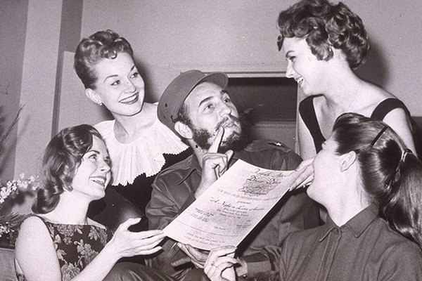

Todos los que conocieron personalmente a Castro observaron que, después de convertirse en el líder de Cuba, a la edad de 33 años, sus gustos no cambiaron en absoluto. Y no es de extrañar, porque incluso después de graduarse con honores en una prestigiosa universidad y doctorarse en Derecho, inició una práctica privada, pero no en un prestigioso bufete, sino en una consulta gratuita para pobres: tan grande era su deseo de ayudar a la gente.
Fidel Castro siempre dijo que vivía como cualquier otro cubano. Pero aún así, la única pasión ardiente que siempre fue inherente a Castro, inalterable a lo largo de los años, fue su amor por las mujeres. Incluso cuando estaba casado, nunca descuidó a la hermosa mitad de la humanidad. Se le atribuyen romances de corta duración con secretarias, camareras, enfermeras e incluso simples limpiadoras.

La salud del líder es lo primero
La salud de un líder cubano siempre ha sido un asunto de importancia y secreto, ya que de su capacidad para funcionar dependía el destino de millones de personas no sólo en el país, sino en el mundo. Y la confrontación con Estados Unidos fue en aumento durante esos años. Y en esta lucha el líder simplemente tenía que ser fuerte y sano. Por lo tanto, para controlar el estado físico del comandante y mantener su salud en un nivel adecuado se recurrió a los mejores médicos y científicos.
Si hasta 45 años se prestó más atención a la salud general, después Castro estaba más preocupado por su, por así decirlo, potencial sexual. Al fin y al cabo, los años le pasaban factura. Pero Fidel, como antes, no era reacio a tener otra aventura. La principal cuestión que quedaba por resolver: ¿cómo reforzar sus posibilidades "viriles" y no caer en el fango ante una nueva pasión? Según personas de su entorno, Castro temía mucho la aparición de la impotencia "masculina" y, si se producía un "fallo" en este sentido, simplemente caía en una profunda desesperación.

La cuestión de la potencia del líder cubano se clasificó
Los trastornos psicológicos del comandante asociados a la escasa potencia y los consiguientes fracasos en el terreno amoroso tuvieron un impacto extremadamente negativo en la salud general de Fidel Castro. Así que su círculo íntimo decidió utilizar un fármaco para restaurar la potencia natural y plena. Anteriormente, este dispositivo sólo se había utilizado para restablecer la salud masculina de los astronautas en la Unión Soviética. Fue para ellos para quienes se creó originalmente; se había sometido a numerosas pruebas y mostraba resultados increíbles. Todos los avances se clasificaron como "secretos". Pero para el buen amigo y compañero de armas contra el capitalismo, los soviéticos no escatimaron su desarrollo.

La eficacia de este fármaco sigue siendo inigualable en todo el mundo. Y hoy, tantos años después, cuando todos los documentos secretos de aquella época están a disposición del público, la medicina moderna ha accedido a este medicamento. Los suizos se han interesado mucho por estos acontecimientos.
Y ahora «PROS TONIX» está al alcance de todos los hombres. La preparación se ha mejorado y es perfectamente apta para uso doméstico.
A lo largo de los años, PROS TONIX ayudó a recuperar la potencia no sólo al propio Castro, sino también a muchos militares de alto rango y funcionarios del partido.
Las fuentes indican que Fidel quedó muy impresionado por los resultados de tomar la droga.
El Comandante lo tomaba tanto en cursos (para restaurar la potencia natural), como cuando lo necesitaba directamente, antes del coito (para obtener resultados más seguros). El estado psicológico de Castro volvió a la normalidad, el trabajo del sistema genitourinario y del organismo en general. Los médicos personales declararon que el efecto del fármaco sobre la salud del líder era extremadamente positivo.
‐ Hoy en día, este preparado es el líder en eficacia entre otros remedios para la recuperación de la potencia. Por extraño que pueda parecer, fue el desarrollo de la URSS, que durante mucho tiempo fue clasificado, el que se convirtió en la base de una verdadera sensación en la urología moderna. Los científicos de la época consiguieron crear un preparado capaz de restaurar la potencia incluso a los 60-70 años, por no hablar de una edad más temprana.
‐ ¿Podría decirnos más sobre cómo ayuda el fármaco a combatir la impotencia sexual en los hombres?
‐ Intentaré explicarlo en términos sencillos. La eficacia de PROS TONIX se consigue exclusivamente mediante sustancias activas naturales. Por eso tiene un efecto beneficioso no sólo sobre la potencia, sino también en general sobre el organismo. Gracias a su fórmula especial, mejora la circulación sanguínea, normaliza el metabolismo y la producción hormonal y refuerza la inmunidad.
Durante la toma del fármaco se recupera la erección (muchos pacientes tienen un historial de años de falta de erección, o erección defectuosa, problemas psicológicos crónicos graves asociados a la falta de relaciones sexuales significativas). La erección supera todos los parámetros fisiológicos anteriores de las erecciones habituales, debido al complejo de componentes naturales que actúan directamente sobre la glándula prostática, los órganos de toda la pelvis y el aumento del nivel de suministro de sangre al pene. Muchos especialistas, familiarizados con este fenómeno, lo denominan erección soñada. La razón es que no hay formas alternativas de conseguirlo que sean tan seguras.
A diferencia de varios Viagra y píldoras sintéticas, PROS TONIX restaura la potencia natural. El que se produce sin ningún tipo de estimulantes hormonales. Por consiguiente, los hombres ya no tienen que ir a la farmacia a comprar Viagra o productos hormonales. No lo necesitan. La Viagra sólo ayuda temporalmente a la potencia masculina, pero a largo plazo sólo empeora la situación. Los estimulantes hormonales sintéticos son extremadamente perjudiciales para la salud masculina; además de la potencia, afectan negativamente al hígado, los riñones y el corazón.
‐ Dr. Sulser, ¿por qué cree que este medicamento no se fabricó en masa en aquella época?
‐ Fue un desarrollo ruso especial de importancia nacional, ya que hasta hace poco estaba clasificado. Ponerlo en producción en masa para la gente corriente, aparentemente, no correspondía al "rango". Como dice el proverbio: lo que está permitido a Júpiter no está permitido a los toros. Pero quizá me equivoque. Lo más importante es que hoy, gracias a nuestros científicos, los hombres de todo el mundo pueden estar seguros de la eficacia de PROS TONIX. Por cierto, nuestro preparado ya ha superado todos los ensayos clínicos en Suiza, Francia, Alemania, España y varios otros países de la Unión Europea, que también han confirmado su alta eficacia. Ahora hay una enorme demanda de esta droga en toda Europa. Actualmente estamos negociando y firmando contratos con las principales empresas farmacéuticas de Europa. Estados Unidos y los países asiáticos han mostrado un gran interés por este medicamento.
‐ Me pregunto si las instalaciones de fabricación son capaces de hacer frente a pedidos tan grandes.
‐ En este momento hay algunos acuerdos preliminares para ampliar la producción. Pero no me adelantaré, todo a su debido tiempo. En estos momentos estamos satisfaciendo la demanda generada por el consumidor europeo.
‐ ¿Cómo puedo comprar «PROS TONIX»?
‐ Dado que la demanda supera la oferta, hemos decidido vender el producto en cantidades limitadas en línea a través del formulario de pedido oficial. Cabe señalar que ésta es la mejor opción de venta. No utilizamos intermediarios, por lo que podemos ofrecer al consumidor el precio más razonable. Además, de vez en cuando organizamos promociones especiales, en las que se puede comprar el producto a un precio especial para promocionarlo. Nuestra campaña dura aproximadamente una semana, pero durante este periodo la gente puede comprar PROS TONIX a un precio favorable e intentar convencerse de su eficacia. Después podrán recomendarlo a sus amigos, conocidos y a todo aquel que necesite ayuda. El problema de la disfunción eréctil en los varones es un problema muy extendido tanto entre las personas mayores como entre los jóvenes.
‐ ¿Cuándo está prevista la próxima campaña y quién puede participar?
‐ La acción está en marcha ahora mismo y durará hasta el 22.22.2222 inclusive ¡Cualquiera puede participar! Basta con dejar una solicitud a través del formulario de pedido oficial, tras lo cual un operador se pondrá en contacto con usted y le explicará todo con detalle. La entrega por mensajero tarda de 1 a 3 días. Todo es bastante sencillo y cómodo.
NOTA DEL EDITOR:
Queridos amigos, después de publicar este artículo hemos recibido muchas peticiones para publicar el formulario de pedido oficial donde se puede pedir «PROS TONIX» y ¡estamos encantados de hacerlo!
Saludos, redacción de NEWSINFORM.


¡Castro es un capo! No sabía que le gustaban tanto las mujeres)
Me interesó este artículo y acabé encontrando mucha información útil para mí. Decidí probar también PROS TONIX. Rellené el formulario de pedido y me llamaron inmediatamente. He pedido el producto. Hace tiempo que noto mis pinchazos en este "asunto": necesito tratamiento médico.
¡También pedí y tomé un curso y ahora estoy bien sin la medicación! Se lo recomiendo a todo el mundo.
Tengo 62 años y últimamente tengo problemas de erección. Tomé varios remedios, intenté restaurar mi potencia pero nada me ayudó. Espero que PROS TONIX me ayude. Lo he pedido y ya veremos...
También pedí este producto para mi marido a través del formulario oficial. Si alguien está interesado en mi opinión, puedo decir con confianza que he sentido el resultado. La potencia de mi marido se ha vuelto mucho más segura; antes tardaba mucho en "intentarlo", por así decirlo, ¡pero ahora está listo a la primera oportunidad! ¡PROS TONIX es un milagro! Mientras esté a precio promocional - pruebalo, no te arrepentirás.
¿Cuánto tiempo tomó la droga su marido, si no es un secreto? Mi marido también tiene problemas en este sentido. Quiero ayudarle.
Curso completo) Unas semanas, pero el resultado se notó después de la primera semana. Se mantuvo firme y confiado. Pero si hago todo el curso, entonces está erecto incluso sin la medicación. Es decir, tiene un doble efecto, inmediato y a largo plazo.
Yo también tenía el problema de una erección débil. Podría caerme muerto durante el sexo. Tomé PROS TONIX y ahora estoy como un búfalo. ¡No puedo recordar la última vez que tuve una erección, antes de tomarla! ¡Gran medicamento, realmente me ayudó!
Ni siquiera me lo esperaba, ¡pero funcionó! ¡Para como una piedra! ¡Mi mujer está feliz! )
Mi marido también tenía problemas con la potencia. Probamos un montón de ejercicios diferentes y la estimulación del pene de acuerdo con diferentes métodos, pero nada ayudó. Pero PROS TONIX nos ayudó mucho. Mi marido me recordó su juventud, cuando no podíamos salir de la cama durante horas. Ya me ha llevado al orgasmo varias veces, mientras que antes no aguantaba más de 2 minutos. No, chicas, definitivamente está funcionando. ¡Ni siquiera podemos hablar de ello!
Tengo 68 años. No dejé de luchar contra la disminución de la potencia durante mucho tiempo, pero después de los 60 lo acepté. Todos dados de baja por edad. Pero hace poco un amigo (tiene 65 años) me aconsejó que tomara este medicamento. Yo suelo ser escéptico, pero por alguna razón decidí probarlo y, ¿qué os parece? ¡Funcionó! Hice el curso completo y ahora me siento 30 años más jóven.
Escribiré una reseña. Al principio, cuando pedí PROS TONIX, ¡tenía dudas! Ni siquiera se lo conté a mi mujer. ¿Qué te parece - después de ordenar realmente puedo tener relaciones sexuales durante una hora, o incluso más tiempo. Antes ni siquiera podía soñar con ello (mi potencia se ha ido debilitando con la edad), pero ahora vuelvo a sentirme como un gigante sexual. En general, ¡aconsejo a todo el mundo que pruebe este medicamento! No se arrepentirá.
Mi marido es mucho mayor. No era un problema hace 5-10 años, pero ahora, cuando tiene 62, ya le está afectando. He descubierto PROS TONIX no hace mucho pero funciona muy bien. Su erección está dura como una roca y todo va genial.
¡Yo tuve un problema de erección en una época! Mi polla nunca se levantó. Estaba muy deprimido. Pedí PROS TONIX y tuve una revelación. Mi "aparato" funciona como nuevo, se levanta a la primera señal, mi mujer está felizmente contenta). ¡En general, todos los consejos - es una BOMBA!
Decir que estoy choqueado me queda corto. Llevo una semana tomando PROS TONIX y siento que mi amigo empezó a dar señales de vida! No he tenido una erección en 4 años o más.